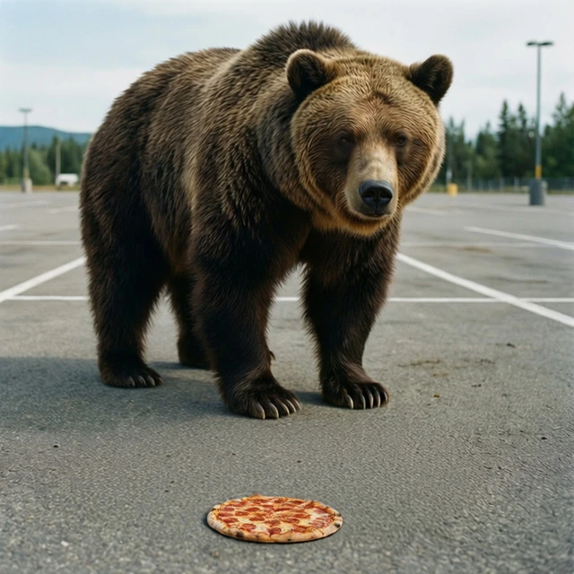
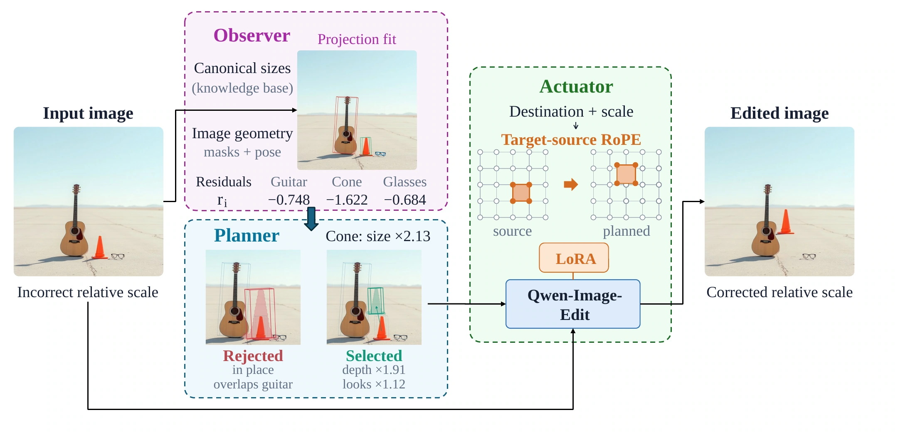
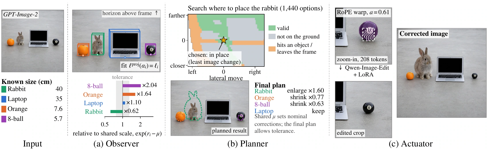
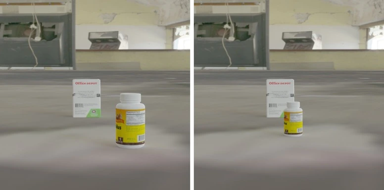
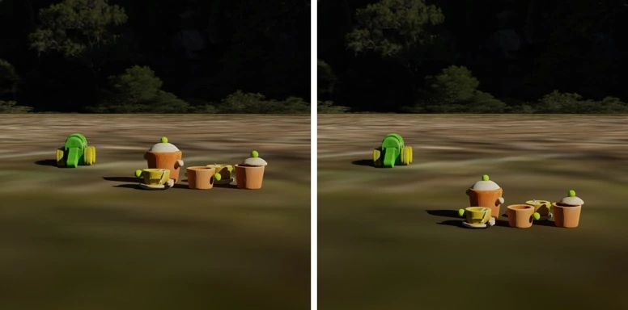
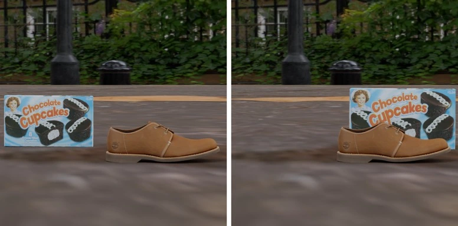
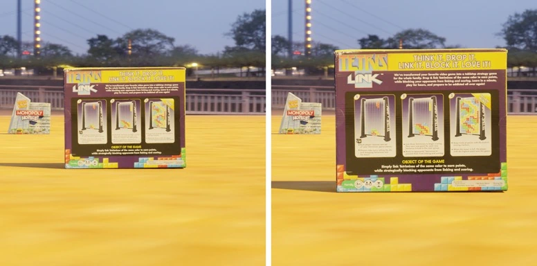
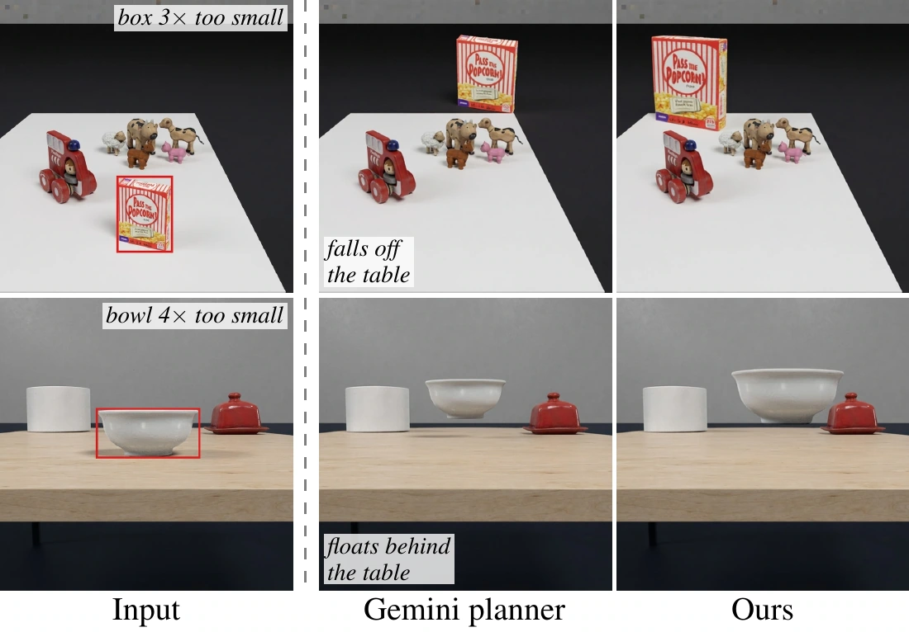
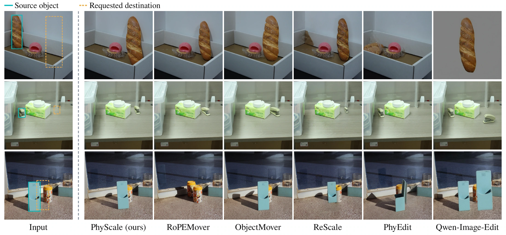
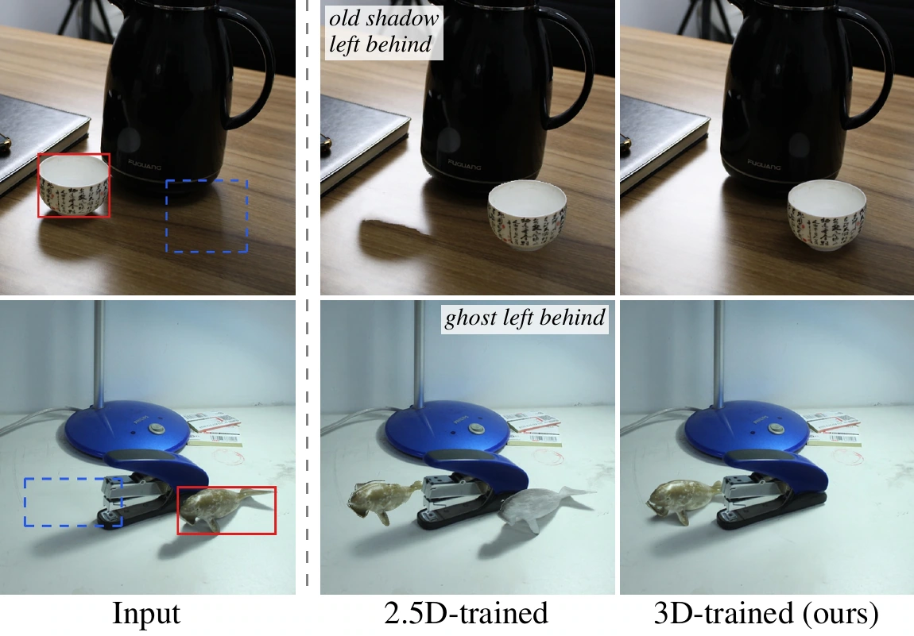

PhyScale: Physically Grounded Object Size Correction in Text-to-Image Generation
1 Boston University 2 Creatify AI
 Original
Original
PhyScaleAbstract
Generated images can appear photorealistic while depicting objects at implausible relative physical sizes. Correcting these errors requires distinguishing physical size from its depth- and pose-dependent appearance. We introduce PhyScale, a framework that formulates size correction as geometric inference and planning, separating physical-size changes from their image-space realization. Using typical real-world object dimensions from a knowledge base and estimated scene geometry, it computes size, depth, and placement commands for an image editor controlled through spatial rotary positional embeddings.
To learn the associated appearance changes, we adapt the editor on only 2,468 paired renders from controlled 3D object transformations. The resulting editor outperforms prior geometry-aware editors in target fidelity and identity preservation on real-image edits. Combined with our geometric inference and planning front end, it matches a state-of-the-art VLM-based correction pipeline on GenScale at one-twentieth of the inference cost, and human raters prefer its corrections.
Method
A small object near a camera can occupy as many pixels as a much larger object farther away. Given an image, object names and typical real-world dimensions, PhyScale estimates which relative sizes are implausible and finds a correction that fits the scene.

Separating physical size from projected size
Under perspective, an object’s projected extent depends on its physical size, depth and pose. When the camera and object orientation stay fixed, the change in projected size is approximately the physical resize factor divided by the depth factor.
In the cone example above, PhyScale makes the cone 2.13× larger in the scene and moves it 1.91× farther from the camera. Its projected size grows by only 1.12×. The editor needs both the destination and this apparent scale to realize the physical correction.
Pose-aware observer
The observer estimates the camera horizon and each object’s ground contact, orients a cuboid with the category’s known dimensions, and fits its projected extent to the instance mask. The fitted scale measures how large the object appears relative to its expected physical size.
Geometric planner
The planner distributes corrections across objects, then searches over depth and lateral position. It prioritizes support and collision avoidance, then considers framing, occlusion and the editor’s spatial resolution. Among feasible candidates it favors smaller changes to the image.
RoPE-controlled editor
The editor translates and scales the source object’s token coordinates using the spatial rotary positional embedding (RoPE) warp of RoPEMover. The warp specifies the projected destination inside Qwen-Image-Edit. Small targets are edited in a magnified local crop to give the model enough spatial tokens.

Learning appearance changes from 3D edits
With Kubric and Blender, we resize and reposition objects and render the entire scene again with the same camera, lighting and reference objects. The resulting 2,468 pairs from 624 scanned assets capture changes in contact, shadows and occlusion. They include changes in size alone, depth alone, joint edits and identity pairs. We train a rank-16 LoRA on Qwen-Image-Edit-2511 for ten epochs. Only the editor receives task-specific training.




Experimental results
End-to-end correction on GenScale
Across 2,800 images from seven generators, PhyScale reduces mean relation error from 0.910 to 0.640. The VLM-based ReScale pipeline reaches 0.649. Replacing VLM diagnosis and planning with geometric computation brings the estimated cost per image from $0.696 to $0.037. GenScale benchmark ↗
| Source generator | Original | ReScale | PhyScale |
|---|---|---|---|
| Nano Banana 2 | 0.620 | 0.459 | 0.472 |
| GPT-Image-2 | 0.707 | 0.557 | 0.491 |
| Z-Image Turbo | 0.898 | 0.682 | 0.673 |
| Grok Imagine | 0.787 | 0.492 | 0.514 |
| Qwen-Image 2512 | 0.992 | 0.581 | 0.664 |
| FLUX.2 | 1.188 | 0.824 | 0.816 |
| SD3.5 Large | 1.174 | 0.948 | 0.851 |
| All seven | 0.910 | 0.649 | 0.640 |
Over 8,001 relations, error is the mean of |s − 3|. A score of 3 denotes plausible size. Five Gemini votes are combined by unique mode or rounded median. Unjudgeable relations receive error 2.
| Method | Time ↓ | Est. cost ↓ |
|---|---|---|
| ReScale | 98.0 s | $0.696 |
| PhyScale | 52.8 s | $0.037 |
Measured on 30 shared inputs. Times sum observation, planning, editing and restoration. Costs are estimated per image.
Independent judges
On 700 shared sources, GPT and Claude also assign PhyScale lower source-averaged error than ReScale. The mean errors are 0.680 versus 0.733 for GPT and 0.583 versus 0.607 for Claude, using one vote per relation.


Both methods see the same input. PhyScale makes the pizza smaller relative to the zebra.
Human evaluation
Five blinded raters compared 105 image pairs sampled where the two methods produced different outputs. They favored PhyScale on relative size, content preservation and naturalness. The largest difference was in naturalness, with 323 votes for PhyScale, 44 for ReScale and 158 ties.
| Criterion | PhyScale | ReScale | Same | Preference [95% CI] |
|---|---|---|---|---|
| Relative size | 195 | 78 | 252 | +0.223 [+0.120, +0.320] |
| Content preservation | 235 | 30 | 260 | +0.390 [+0.297, +0.480] |
| Naturalness | 323 | 44 | 158 | +0.531 [+0.410, +0.644] |
Positive preference favors PhyScale on a scale from −1 to +1. Brackets give 95% prompt-clustered bootstrap confidence intervals.
Observation and placement under known geometry
We construct 116 tabletop scenes in Blender and 109 matched photorealistic counterparts. Given the true object dimensions, an observer must identify the incorrectly sized object and predict its correction factor within 20%.
| Observer | Blender | Photorealistic |
|---|---|---|
| Gemini 3.1 Pro | 44.8% | 38.5% |
| PhyScale (3D reconstruction) | 45.7% | 47.7% |
| PhyScale | 56.9% | 44.0% |
Feasible placement
Given the same observation and prescribed resize, PhyScale passes all automatic placement checks on 87.9% of the Blender scenes, compared with 80.2% for Gemini 3.1 Pro. Requiring full tabletop support gives pass rates of 75.9% and 69.0%, respectively.


Prescribed editing on real photographs
On ObjectMover, every editor receives the same 188 requests to move or resize a real object. The paired destination photograph supplies ground truth for target fidelity. A separate comparison to the source object measures identity preservation.

| Editor | Target DINO ↑ | DreamSim ↓ | Identity DINO ↑ |
|---|---|---|---|
| Qwen-Image-Edit (structured prompt) | 0.696 | 0.326 | 0.653 |
| PhyEdit | 0.791 | 0.216 | 0.738 |
| ReScale editor | 0.814 | 0.177 | 0.786 |
| ObjectMover | 0.867 | 0.140 | 0.813 |
| RoPEMover | 0.861 | 0.139 | 0.802 |
| PhyScale | 0.899 | 0.105 | 0.856 |
Target DINO and DreamSim compare edited and ground-truth destination crops. Identity DINO compares the edited object with its source crop. Arrows indicate the preferred direction.
PhyScale leads on all three metrics. In the human evaluation, raters marked 89.9% of its requests complete, compared with 78.0% for ReScale and 74.0% for ObjectMover.
What drives editing fidelity?
Positional commands
With the backbone, training examples and update budget held fixed, communicating destinations through RoPE increases target DINO from 0.439 with text-box instructions to 0.895 on ObjectMover.
Size–depth supervision
On held-out renders, training with size and depth changes gives a silhouette IoU of 0.771, compared with 0.629 for translation-only training. Re-rendering the full scene also teaches the editor how shadows and occlusions change when an object moves.


BibTeX
@misc{li2026physcale,
title = {{PhyScale}: Physically Grounded Object Size Correction in Text-to-Image Generation},
author = {Lingxiao Li and Ledell Wu and Boqing Gong},
year = {2026}
}